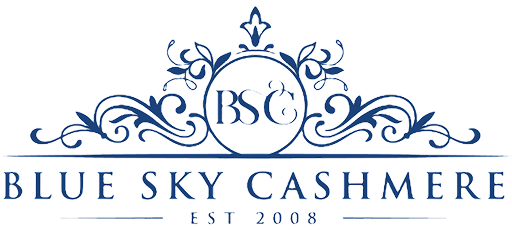

Монзиркон багц — 01 · Үйлдвэрлэл

Дээд зэрэглэлийн монгол ноолуур, гарал үүслийн нутагтаа үйлдвэрлэгдэнэ.
01 — Танилцуулга
Түүхий эдээс бэлэн бүтээгдэхүүн хүртэл
Blue Sky Cashmere нь монгол ноолуурыг түүхий эдээс бэлэн бүтээгдэхүүн хүртэл бүрэн циклээр боловсруулдаг дээд зэрэглэлийн үйлдвэр юм. Үйлдвэрлэлийн бүх үе шат Монгол Улсад — ноолуурын гарал үүслийн нутагт — явагддаг.
Монзиркон ХХК уг үйлдвэрийн 50 хувийг эзэмшдэг. Бид урт хугацааны эзэмшигчийн хувьд чанар, тогтвортой байдлыг юуны түрүүнд эрхэмлэдэг.
02 — Хүчин чадал
Бүрэн циклийн үйлдвэрлэл
•• т
Жилийн хүчин чадал
•••
Ажилтан
••
Бүтээгдэхүүний шугам
••
Экспортын зах зээл
- Ангилалт, угаалга Түүхий ноолуурыг гарал үүсэл, өнгө, ширхэгтийн нарийнаар нь ялган ангилж, зөөлөн горимоор угааж цэвэрлэнэ.
- Ээрмэл Самнаж бэлтгэсэн ноолуураас нарийн, жигд ээрмэл утас үйлдвэрлэнэ.
- Сүлжмэл Загвар бүрийг орчин үеийн сүлжмэлийн тоног төхөөрөмж дээр нарийвчлалтайгаар сүлжиж гүйцэтгэнэ.
- Эцсийн боловсруулалт, чанарын хяналт Бэлэн бүтээгдэхүүн бүр угаалт, хэлбэржүүлэлт, чанарын эцсийн шалгалтыг бүрэн дамждаг.
03 — B2B ба OEM
Олон улсын брэндүүдийн үйлдвэрлэлийн түнш
Blue Sky Cashmere нь олон улсын брэндүүдэд OEM, ODM үйлдвэрлэлийн үйлчилгээ үзүүлдэг. Хувийн шошготой захиалга, бага тоо ширхэгтэй дээд зэрэглэлийн цуврал — аль алиныг нь бид адил нямбай гүйцэтгэдэг.
Захиалагчийн загвар, өнгө, техникийн шаардлагын дагуу — эсхүл манай хөгжүүлэлтийн багтай хамтран — бүтээгдэхүүнийг анхны дээжээс эцсийн цуврал хүртэл боловсруулна.
Гэрчилгээ, стандарт: ••
Үйлдвэрийн танилцуулга, хамтын ажиллагаа
Танилцуулга хүссэн болон хамтын ажиллагааны хүсэлтээ бидэнд илгээнэ үү. Бид ажлын 3 хоногийн дотор хариу өгнө.